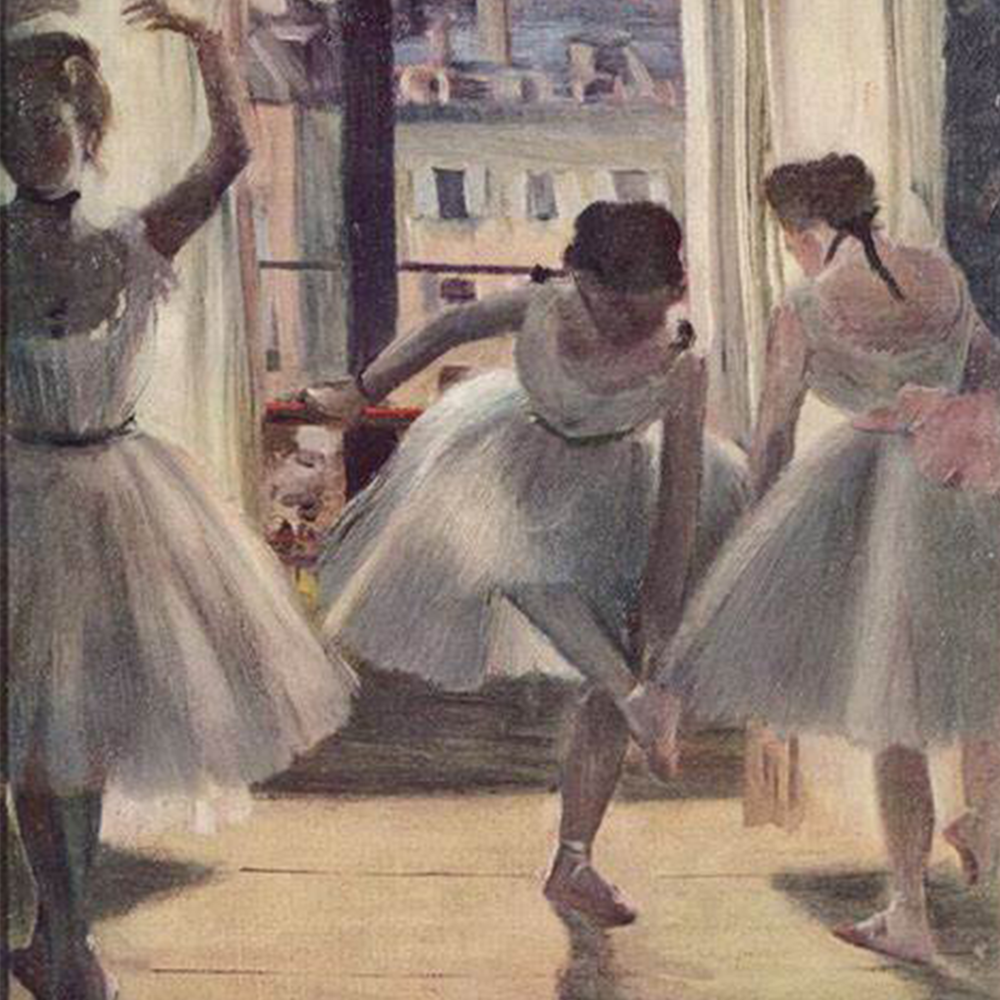

Edgar Degas
Edgar Degas è stato un pittore e scultore francese considerato appartenente agli impressionisti. È celebre per i suoi dipinti a pastello e ad olio.
Sebbene Degas sia considerato uno dei fondatori dell'impressionismo, egli rifiutò il termine, preferendo essere definito un realista.
Degas era un superbo disegnatore e particolarmente magistrale nel rappresentare il movimento, come si può vedere nelle sue interpretazioni di ballerine.
All'inizio della sua carriera, Degas voleva diventare un pittore di storia. Poco più che trentenne, cambiò strada e divenne un pittore classico della vita moderna.
